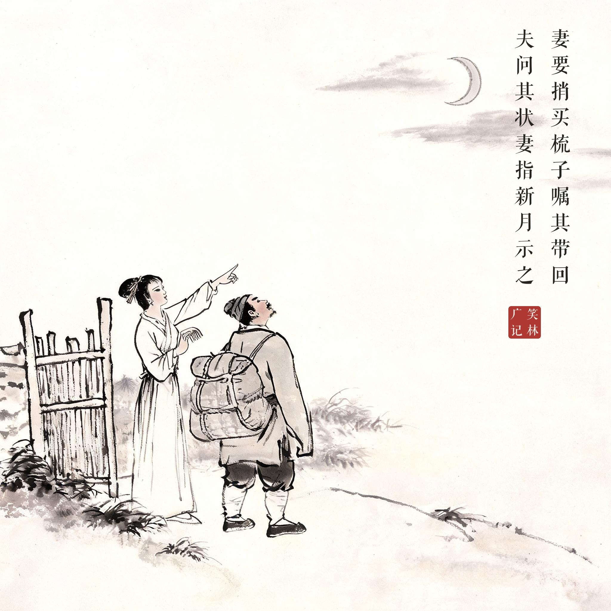
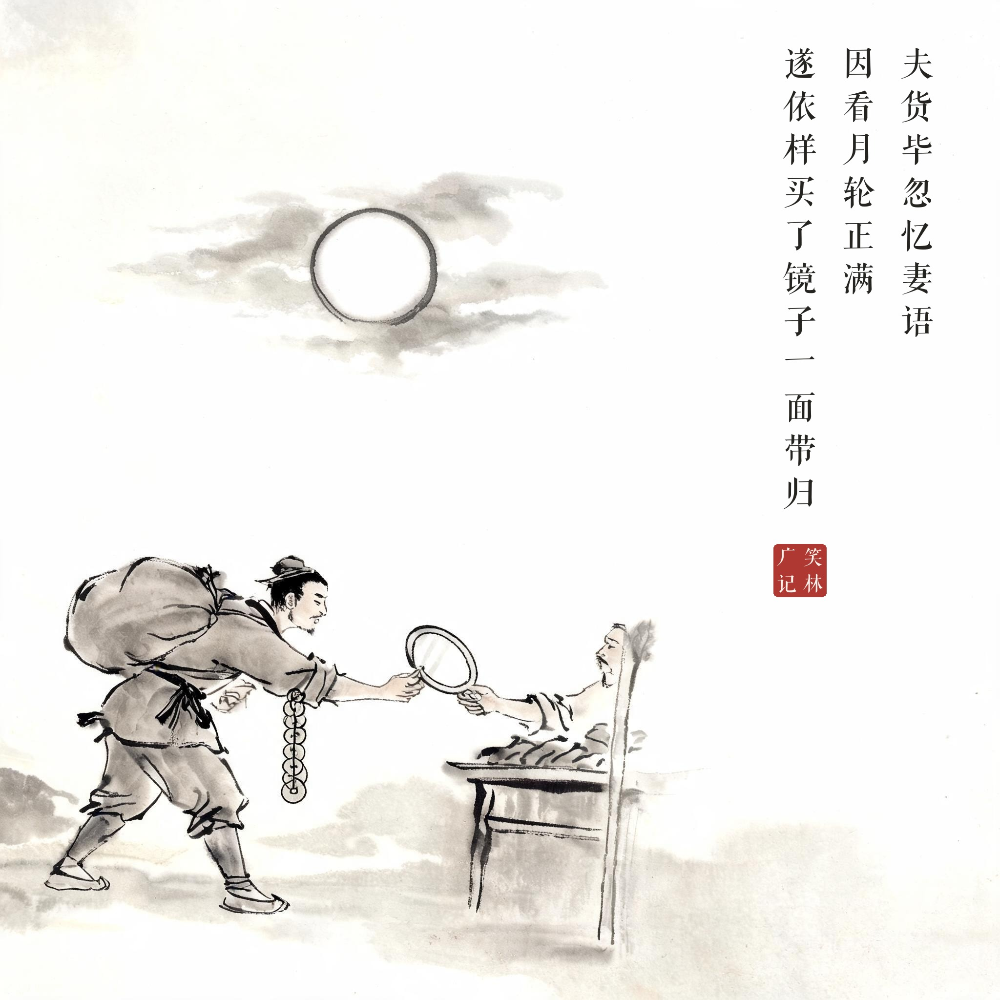
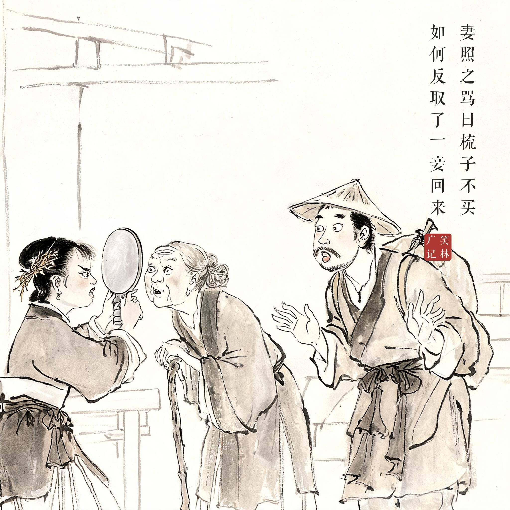
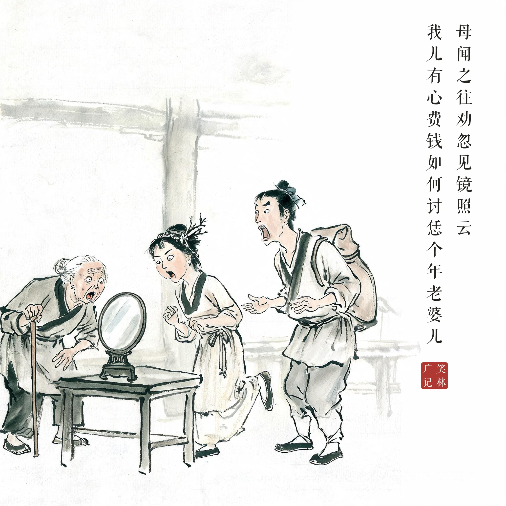
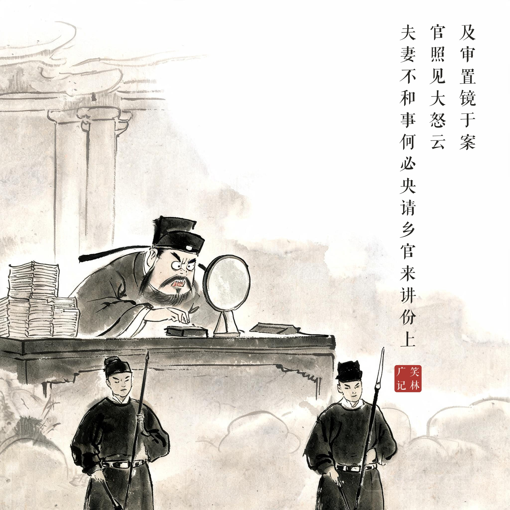

《笑林广记 · 谬误部》（[清]游戏主人纂集）
有出外生理者，妻要捎买梳子，嘱其带回。夫问其状，妻指新月示之。夫货毕，忽忆妻语，因看月轮正满，遂依样买了镜子一面带归。妻照之骂曰："梳子不买，如何反取了一妾回来？"两下争闹。母闻之往劝，忽见镜，照云："我儿有心费钱，如何讨恁个年老婆儿？"互相埋怨，遂至讦讼。官差往拘之，差见镜，慌云："才得出牌，如何就出添差来捉违限？"及审，置镜于案，官照见大怒云："夫妻不和事，何必央请乡官来讲份上！"
出门做买卖的丈夫，妻子托他捎把梳子回来。问她梳子什么样，妻子指了指天上的新月。丈夫办完货，想起妻子的嘱托，一看月亮已经变成满月，就照着样子买了面镜子带回家。妻子对着镜子大骂："梳子不买，怎么反倒领回一个小妾来？"两人大吵。婆婆闻声来劝，凑近镜子一看："儿啊，你真肯花钱——怎么讨回来这么个老太太？"一家人互相埋怨，一直闹到衙门。差人见了镜子，慌了："我才领了传牌，怎么马上就派个添差来捉我误期限？"等到开堂，镜子摆在案上，县官一照，大怒道："夫妻不和的家务事，何必请乡绅来说情！"——一家人谁都不认识镜子里的自己。
从指月托梳、依"满月"买镜、到全家对着镜中人各自见怪、直至公堂上县官对着自己发怒——讽刺人人只看得见别人、认不得自己。